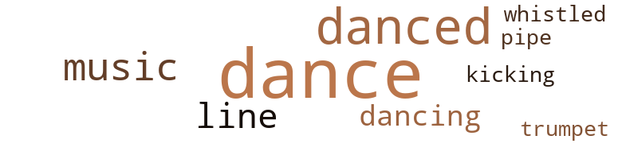
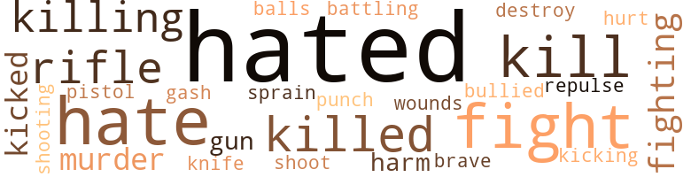

Divided, by Janssen, Milton (1963)
36 music-related terms matched in this text.
Most frequent terms in this topic: dance (14); danced (7); music (4); line (3); dancing (2)
cornet.n.01
Definition: a brass musical instrument with a brilliant tone; has a narrow tube and a flared bell and is played by means of valves
| word | sentence |
|---|---|
| trumpet | It seemed as if I had just fallen asleep , when I heard the blast of a trumpet . |
dance.n.01
Definition: an artistic form of nonverbal communication
| word | sentence |
|---|---|
| dance | Jim had n't known where it was because he had only met Eva one time before at some Red Cross dance in ' Frisco . |
| dance | " How about a dance , Margaret , " I asked . |
| dance | I had a fraternity dance to go to and I loved parties . |
| dance | But I knew it was better that I was n't , 'cause I had to get to that dance . |
| dances | I wanted to hold her next to me , but not the way I had held other girls at the dances the fraternity gave . |
| dance | The time raced by at the dance . |
| dances | The guys had said they were n't gon na have them anymore , 'cause they ruined the dances . |
| dance | They were having a dance there and it seems they were n't satisfied with dancing , so they threw all the furniture out the window . |
| dance | The dance was on the fourth floor . " |
dance.v.03
Definition: skip, leap, or move up and down or sideways
| word | sentence |
|---|---|
| danced | At first , Margaret danced a big distance from me . |
| dancing | Her hand felt cold in mine , but I did n't care , 'cause it was terrific to be really dancing with Margaret in a cocktail lounge . |
| danced | We danced a while . |
| dance | There 's lot 's of places to dance , too . |
| dance | T asked her to dance some more . |
| dance | " It 's more fun to dance out here , " she said . |
| dance | " Well , we could go out and dance at any old place , " she answered . |
| dance | Johnny had n't asked Eva to dance yet , and I was glad , 'cause it gave me a chance to suggest to everybody that we buy a bottle instead of just ordering by rounds . |
| danced | The longer I danced with Cynthia , the crazier I felt . |
| dance | We ca n't dance to that . " |
| danced | I 've been here before and danced to it . |
| danced | She danced with more feeling than all the silly little girls I had ever danced with all put together . |
| danced | She danced with more feeling than all the silly little girls I had ever danced with all put together . |
| dancing | I let go with a sudden uppercut , at the same time dancing back to avoid his right . |
| dance | Besides , Margaret had spent months teaching me to dance , and I was just about the best dancer in the crowd . |
| danced | I danced with her most of the time , all that night . |
kick.v.04
Definition: kick a leg up
| word | sentence |
|---|---|
| kicking | I rolled around on the floor , kicking my legs in the air . |
music.n.01
Definition: an artistic form of auditory communication incorporating instrumental or vocal tones in a structured and continuous manner
| word | sentence |
|---|---|
| music | The music was blaring while Sammy and I gathered pieces of a model airplane together . |
| music | The music kept playing and we kept dancing . |
| music | Dad was listening to music , while Margaret and Johnny were sitting on the couch , looking at advertisements about homes for newlyweds . |
| music | " Will you two shut up so an old man can listen to some music for a change ? " |
pipe.n.04
Definition: a tubular wind instrument
| word | sentence |
|---|---|
| pipe | He was smoking his pipe . |
tune.n.01
Definition: a succession of notes forming a distinctive sequence
| word | sentence |
|---|---|
| line | Several other guys , a lot older looking than me , stood in line . |
| line | Maybe she was just giving me a line about the experience she had had . |
| line | Ca n't you finish dinner first before you jump up from the table and make a bee line for wherever you find to go at this hour of the evening ? " |
whistle.v.01
Definition: make whistling sounds
| word | sentence |
|---|---|
| whistled | Downing it , I turned for the door , ready to brave the cold wind that whistled down Bourbon Street . |
122 violence-related terms matched in this text.
Most frequent terms in this topic: hated (37); hate (14); fight (11); kill (8); killed (7)
battle.v.01
Definition: battle or contend against in or as if in a battle
| word | sentence |
|---|---|
| battling | Seconds later , three of the biggest gorillas in school were battling me down the stairs . |
cut.n.05
Definition: a wound made by cutting
| word | sentence |
|---|---|
| gash | A long gash covered Rodney 's face from his chin to his right ear . |
destroy.v.04
Definition: put (an animal) to death
| word | sentence |
|---|---|
| destroy | Just destroy it , will you ? |
fight.n.02
Definition: the act of fighting; any contest or struggle
| word | sentence |
|---|---|
| fighting | It seems after a while everyone just hopes that he will get in the fighting and either get wounded and sent home or just plain die . |
fight.n.05
Definition: a boxing or wrestling match
| word | sentence |
|---|---|
| fight | I was embarassed at hav - ing been in a fight , 'cause I was too damn grown up for such kid stuff . |
| fight | They think they 're so damn smart sitting around while others fight and die for our country . |
| fights | I was much bigger than most of the boys there , and I got into dozens of fights . |
| fight | " You put on the best fight I ever saw . |
fight.v.02
Definition: fight against or resist strongly
| word | sentence |
|---|---|
| fight | As a result of refusing to join them in the fun of beating up a bunch of kids I knew did n't stand a chance against us , I had to fight one of my fraternity . |
| fight | The gang was so damn proud of me they would n't let me out of their sight , and the girls in the crowd could n't seem to fight hard enough over me , but I hated the whole affair pretty quick . |
| fight | " Do you really think this country will fight , Dad ? '' |
| fight | Let those English cowards fight this one by themselves . |
| fighting | If the Germans were n't taking away all their trade , they would n't be all for fighting now . |
| fight | fust when I could feel her legs give wray under the pressure of mine , she said , " Billy , if you want me this way , I wo n't fight you , hut I got to tell you Billy . |
| fighting | I knew from what the reporters said that Roosevelt felt friendly towards England and wanted somehow to help them , but I got mad with him when he said after months of fighting in Europe that he would n't get us into a war . |
| fight | I did n't want to fight any more . |
| fight | I would fight back like all hell . |
| fighting | Johnny is n't trained yet and he do n't know nothin ' about fighting . " |
| fight | His mind was too tired to fight me off . |
gun.n.01
Definition: a weapon that discharges a missile at high velocity (especially from a metal tube or barrel)
| word | sentence |
|---|---|
| gun | I needed a gun . |
| gun | All I needed was enough to rent a gun . |
hate.n.01
Definition: the emotion of intense dislike; a feeling of dislike so strong that it demands action
| word | sentence |
|---|---|
| hate | Johnny looked at me with hate in his eyes . |
hate.v.01
Definition: dislike intensely; feel antipathy or aversion towards
| word | sentence |
|---|---|
| hated | I hated Johnny . |
| hated | " Tell me , Billy , " Johnny was talking to me , but I hated to listen , " what 's been happening around here ? |
| hate | I hardly ever saw Margaret any more and I did n't try too much , 'cause she seemed to really hate me now . |
| hated | I hated Johnny . |
| hated | I hated the little things like that . |
| hate | I knew Charlie would hate me . |
| hate | " Do n't hate me , Billy , " he said . |
| hated | I hated the son-of-a-bitch , 'cause I knew what he was thinking . |
| hated | The gang was so damn proud of me they would n't let me out of their sight , and the girls in the crowd could n't seem to fight hard enough over me , but I hated the whole affair pretty quick . |
| hated | I worked hard at Irving 's , but hated everybody I knew there and at school . |
| hated | They still thought of me as a hero and I liked it a lot , but I hated what had happened to my life . |
| hate | I really had learned to hate just about everybody in town , but I had n't thought about Margaret . |
| hate | I could n't hate Margaret . |
| hated | I hated to shave and I had to about twice a week , or I started to look worse than a shaggy dog . |
| hate | I 'm sick of just staying home and I hate those damn V-12 characters at school . |
| hated | I hated to think about watching her when she took her clothes off . |
| hated | I hated myself for feeling glad . |
| hated | I hated Johnny . |
| hated | I hated Johnny when he talked that way about me , but I did n't say anything . |
| hate | " I hate you , Billy . |
| hated | I hated him ; I hated Johnny . |
| hated | I hated him ; I hated Johnny . |
| hated | I hated the idea of being around a hunch of lousy guys all the time , so I decided I had no intention of drilling or doing a damn thing I was supposed to do at the silly school . |
| hated | I hated myself for feeling the way I did . |
| hated | I hated myself for knowing I would n't force her if she did n't want to . |
| hated | I hated Johnny . |
| hated | I hated the way Johnny kept saying I was dumb . |
| hated | I hated Johnny . |
| hated | I hated to start a lot of trouble , especially when I was about to graduate . |
| hated | I hated to get thrown out now , but I knew I had to get home . |
| hated | I was sorry though it had to be that way , especially since I hated the dungeon . |
| hated | I hated all the bastards now ' . |
| hate | " Billy , just sit there and hate me while I tell you what I did . |
| hated | I almost hated to be in the same room with her . |
| hate | I should have known you 'd hate me after what I did . |
| hate | I did n't really hate Margaret , and anyway , I could n't let her do it . |
| hate | I did n't really hate Johnny ; I just was n't sure what I felt about him . |
| hated | I hated myself for saying it , but I could n't help it . |
| hated | I hated Johnny now . |
| hated | That was before he hated me . |
| hate | Somehow I knew I could n't really hate Johnny . |
| hated | I hated it there . " |
| hated | I hated Johnny when he greeted me that way . |
| hated | I hated her to cry ; I hated her to cry over Johnny . |
| hated | I hated her to cry ; I hated her to cry over Johnny . |
| hated | Anyway , I hated school . |
| hated | He hated to take me anywhere . |
| hate | I was n't sure I did n't still hate Johnny . |
| hated | I hated Johnny when he made fun of me . |
| hated | I knew Johnny would n't read a damn bit of it , 'cause Johnny hated to read anything , unless it was about building something . |
injury.n.01
Definition: any physical damage to the body caused by violence or accident or fracture etc.
| word | sentence |
|---|---|
| harm | I did n't mean any harm by it , honest . " |
| harm | Besides , it did a new car lots of harm just to let it sit up in a garage day after day . |
kick.v.04
Definition: kick a leg up
| word | sentence |
|---|---|
| kicking | I rolled around on the floor , kicking my legs in the air . |
kick_back.v.02
Definition: spring back, as from a forceful thrust
| word | sentence |
|---|---|
| kicked | I went down hard , but still kicked plenty after getting to the floor . |
| kicked | I kicked unmercifully at Johnny . |
| kicked | I swung wildly with my hands and kicked my feet repeatedly , but Johnny had me pinned down . |
kill.v.10
Definition: cause the death of, without intention
| word | sentence |
|---|---|
| killed | Dad surprised me when he did n't object to Johnny 's saying that he might be killed . |
| kill | Someday I would kill him . |
| kill | I made up my mind I 'd rape her , then kill her , when I got home . |
| killing | Somehow , I just did n't feel like killing her . |
| killed | He wants all of us killed . |
| killing | I had let him realize the satisfaction of damn near killing me . |
| kill | " I ought to kill you . |
| kill | I swear to God above , I ought to kill you . |
| kill | " So help me God if I believed what you just said , I 'd kill you with my own hands . " |
| kills | Stop ' dat before you kills yourself . " |
| killed | I knew I had to get the hell out of there before somebody got killed . |
| killed | If I stayed either Dad or Johnny had to get killed . |
| kill | She would give it to Johnny , my own brother , 'cause she knew it would damn near kill me . |
| killed | I believe it was the concussion that killed him . " |
| killing | I knew Johnny was killing me . |
| kill | I knew he had better kill me cause I would have killed him if I got the chance . |
| killed | I knew he had better kill me cause I would have killed him if I got the chance . |
| killed | You almost killed him . |
| killing | We sure do n't want those damn Japs over here killing the women and children . |
| kill | You 'll probably kill as many ot them as the Japs would , you and your friends with their hopped up motor bikes and cars . " |
| killing | My feet were killing me , and I could feel the effects of the wine on top of the whiskey Tom and I had finished off at home . |
| kills | " What kills me is what the h ----- , " " Do n't use that kind of language around here , " Dad interrupted Johnny . |
killing.n.02
Definition: the act of terminating a life
| word | sentence |
|---|---|
| killing | I felt the killing blow strike my chin . |
knife.n.02
Definition: a weapon with a handle and blade with a sharp point
| word | sentence |
|---|---|
| knife | My eyes barely focused on the oversized kitchen knife sticking straight up in my stomach . |
murder.n.01
Definition: unlawful premeditated killing of a human being by a human being
| word | sentence |
|---|---|
| murder | He kept letting me get by with murder . |
| murder | I wondered if she would scream , but decided I was thinking of what happened in murder pictures . |
| murder | Hell , I was n't there to murder her ; I just wanted to lay her . |
musket_ball.n.01
Definition: a solid projectile that is shot by a musket
| word | sentence |
|---|---|
| balls | Several hours went by while I just stood around watching the little balls light , up numbers . |
pain.v.02
Definition: cause emotional anguish or make miserable
| word | sentence |
|---|---|
| hurt | I did n't want to hurt him . |
pistol.n.01
Definition: a firearm that is held and fired with one hand
| word | sentence |
|---|---|
| pistol | I leveled the pistol at her . |
punch.n.01
Definition: (boxing) a blow with the fist
| word | sentence |
|---|---|
| punch | I could n't be sure how many times he repeated , but I knew he still packed a lot of punch . |
repel.v.03
Definition: force or drive back
| word | sentence |
|---|---|
| repulse | She was trying to repulse me . |
rifle.n.01
Definition: a shoulder firearm with a long barrel and a rifled bore
| word | sentence |
|---|---|
| rifle | I picked up the rifle . |
| rifle | I looked at the rifle a long time . |
| rifle | I knew Dad would catch me with Johnny 's rifle and I 'd catch hell . |
| rifle | " Billy , " Dad said when he saw me standing with the rifle in my hand , " what are you doing with Johnny 's rifle ? " |
| rifle | " Billy , " Dad said when he saw me standing with the rifle in my hand , " what are you doing with Johnny 's rifle ? " |
| rifle | Dad said I was too young to have a rifle of my own . |
shoot.v.02
Definition: kill by firing a missile
| word | sentence |
|---|---|
| shoot | I knew I did n't care if they decided to shoot me , but I still could n't help being nervous . |
shooting.n.02
Definition: killing someone by gunfire
| word | sentence |
|---|---|
| shooting | Blood was all over the sheet , and shooting from my chest and stomach . |
sprain.n.01
Definition: a painful injury to a joint caused by a sudden wrenching of its ligaments
| word | sentence |
|---|---|
| sprain | " I think he 's got a sprain , " she said . |
strong-arm.v.02
Definition: be bossy towards
| word | sentence |
|---|---|
| bullied | I convinced Ching with a sorry story about being bullied by some giant in the Quarter . |
weather.v.01
Definition: face and withstand with courage
| word | sentence |
|---|---|
| brave | Downing it , I turned for the door , ready to brave the cold wind that whistled down Bourbon Street . |
wound.n.01
Definition: an injury to living tissue (especially an injury involving a cut or break in the skin)
| word | sentence |
|---|---|
| wounds | When I got home I sneaked up to my room and bandaged my wounds . |
38 religion-related terms matched in this text.
Most frequent terms in this topic: God (22); devil (4); hell (3); church (2); Heaven (2)
church.n.02
Definition: a place for public (especially Christian) worship
| word | sentence |
|---|---|
| church | It 's quieter than church . " |
| church | There 's gon na ' be a big weddin ' , and in a church too . |
church.n.04
Definition: the body of people who attend or belong to a particular local church
| word | sentence |
|---|---|
| Church | It was one of those Swanky painted apartment buildings by the Catholic Church at the . |
confession.n.05
Definition: the document that spells out the belief system of a given church (especially the Reformation churches of the 16th century)
| word | sentence |
|---|---|
| confession | It did n't take her long to begin her strange confession . |
eden.n.01
Definition: any place of complete bliss and delight and peace
| word | sentence |
|---|---|
| heaven | " God in heaven ! |
| Heaven | God in Heaven , I thought . |
| Heaven | I was n't sure if I was in Heaven or maybe in hell . |
god.n.03
Definition: a man of such superior qualities that he seems like a deity to other people
| word | sentence |
|---|---|
| God | Then , God knows . |
| God | I have n't had a drink in God knows when . |
| God | God knows when that 'll be . |
| God | I wish to God I had decided to bring my car out here , but how in the world was I to know I 'd be here for the duration ? |
| God | " He 's o.k. now , but for God 's sake , say the right thing . |
| God | For God 's sake , what 's the matter with you ? " |
| God | " One more scream or protest outa you and I swear to God , I 'll slap you so hard , you 'll never explain the marks to your parents . " |
| God | " You got five seconds to get those God Damn clothes off or they wo n't be worth wearin ' . " |
| God | God damn it , I thought , what a bunch of shit ! |
| God | That 's why he 'd sent me to this God forsaken hole . |
| God | Thank God for that , I thought . |
| God | God in Heaven , I thought . |
| God | Thank God he did , I thought . |
| God | " Billy , for God 's sake ! " |
| God | " Billy , I 'm o.k. For God 's sake , come home , will ya ? |
| God | I swear to God , Billy , I ca n't figure out what happened between you and him . " |
| God | " For God 's sake ! " |
| God | I swear to God above , I ought to kill you . |
| God | " So help me God if I believed what you just said , I 'd kill you with my own hands . " |
| God | For God 's sake , stop it , Billy ! " |
| God | For God 's sake , why ? " |
| God | Thank God for the war . |
hell.n.01
Definition: any place of pain and turmoil
| word | sentence |
|---|---|
| hell | " Get the hell off that floor , " he commanded . |
| hell | " Get the hell away from us , " Johnny yelled at me . |
| hell | What the hell was so funny ? |
prayer.n.01
Definition: the act of communicating with a deity (especially as a petition or in adoration or contrition or thanksgiving)
| word | sentence |
|---|---|
| prayers | My prayers were answered , but only in part . |
satan.n.01
Definition: (Judeo-Christian and Islamic religions) chief spirit of evil and adversary of God; tempter of mankind; master of Hell
| word | sentence |
|---|---|
| devil | What the devil I 'm doing in this sailor 's town I 'll never know . |
| devil | I was lying like the devil , but it worked . |
| devil | You 're lying like the devil himself . " |
| devil | " Where the devil do you think you 're going now ? |
temple.n.03
Definition: an edifice devoted to special or exalted purposes
| word | sentence |
|---|---|
| temples | I got hot around the temples . |